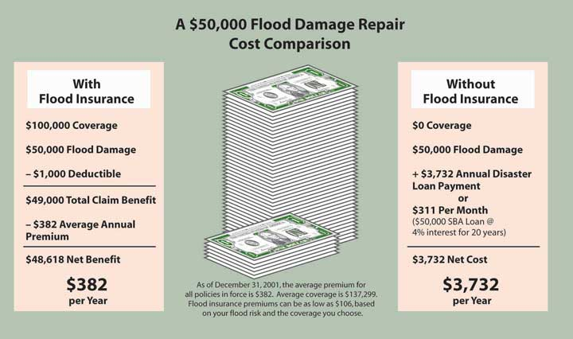

In this section we elaborate on the following:
Two major risks that are too significant to be retained and cannot be avoided are the possibility of losses by flood or title defect.
Homeowners policies exclude loss caused by flood for two reasons: it is considered catastrophic, and it is due to the problem of adverse selection because only those living in flood-prone areas would buy the coverage. This major gap in coverage can be filled by purchasing a flood insurance policy available through the National Flood Insurance Program (NFIP), a federal program that provides flood insurance to flood-prone communities. Communities must apply to the program so that citizens can become eligible to buy flood insurance policies. In addition, the communities must undertake certain required loss-control activities under a program administered by the Federal Insurance Administration. Flood insurance is required by law in order to get secured financing to buy, build, or improve structures in areas that are designated Special Flood Hazard Areas (SFHAs).Federal Emergency Management Agency, Accessed March 20, 2009, http://www.fema.gov/nfip/nfip.htm.
The policy covers losses that result directly from river and stream and coastal and lakeshore flooding. Structures that are covered by flood insurance include most types of walled and roofed buildings that are principally above ground and affixed to a permanent site. The contents of a fully enclosed building are also eligible for coverage; however, flood insurance policies do not automatically provide this coverage. It must be specifically requested. Commercial structures, multiple-family dwellings, and single-family residences are also eligible for coverage.
Flood insurance provides coverage for structures and (if covered) personal property or contents on an actual cash value basis. Flood policies do not offer replacement coverage for contents. If a single-family residence is insured for 80 percent of its replacement cost, damage to the structure will be reimbursed on a replacement cost basis.
Two layers of coverage are available. The first is emergency coverage, available to residents of flood-prone communities as soon as the community enters the program. The rates are partially subsidized by the federal government.
Once a flood rate map is completed, a second, or regular, layer of coverage is available at actual rather than subsidized rates. Insurance under the regular program is available only to communities that have passed required ordinances and have undergone studies by the Army Corps of Engineers.
In September 1994, Congress enacted the National Flood Insurance Reform Act.Federal Insurance and Mitigation Administration (FIMA) is part of the Federal Emergency Management Agency (FEMA). The National Flood Insurance Program (NFIP) is under FEMA: http://www.fema.gov/nfip/laws.htm (accessed March 20, 2009). One of the major provisions of the act was to provide for a substantial increase in the amount of flood insurance coverage available. However, after Hurricane Katrina and the floods in New Orleans, these limits appeared too low for the total devastating losses. The rates of flood insurance cost and coverage are shown in Table 13.9 "National Flood Insurance Cost and Coverage as of May 2008".
The Act also increased the waiting period from five to thirty days before a flood insurance policy is effective. This thirty-day waiting period begins the day after the application for flood insurance is made. This is a measure to reduce potential adverse selection from individuals who may be downriver from rising flood waters. The waiting period does not apply to the initial purchase of flood insurance coverage when the purchase is in connection with the making, increasing, extension, or renewal of a loan.
Table 13.9 National Flood Insurance Cost and Coverage as of May 2008
|
For nonresidential, see: http://www.floodsmart.gov/floodsmart/pages/choose_your_policy/policy_rates.jsp Flood Quick-Quote: Residential Rates Effective May 1, 2008 |
|||||
|
Moderate-to-Low Risk Areas RESIDENTIAL: Preferred Risk Policy (ZONES B, C, X) (PRE-/POST-FIRM) A residential policy, based on preferred rates for qualified structures in moderate-to-low risk areas. A Preferred Risk Policy offers two types of coverage: Building & Contents and Contents Only. |
|||||
| Building & Contents | Contents OnlyAdd the $50.00 Probation Surcharge, if applicable., Contents-only policies are not available for contents located in basement only. | ||||
| Coverage | Annual PremiumPremium includes Federal Policy Fee of $13.00., Premium includes ICC premium fee of $6.00. Deduct this amount if the risk is a condominium unit. | Coverage | Annual PremiumPremium includes Federal Policy Fee of $13.00. | ||
| Without Basement or Enclosure | With Basement or Enclosure | Contents above Ground (More Than One Floor) | All Other Locations (Basement Only Not Eligible) | ||
| $20,000/$8,000 | $119 | $144 | $8,000 | $39 | $58 |
| $30,000/$12,000 | $148 | $173 | $12,000 | $53 | $80 |
| $50,000/$20,000 | $196 | $221 | $20,000 | $81 | $113 |
| $75,000/$30,000 | $230 | $260 | $30,000 | $93 | $130 |
| $100,000/$40,000 | $257 | $287 | $40,000 | $105 | $147 |
| $125,000/$50,000 | $277 | $307 | $50,000 | $117 | $164 |
| $150,000/$60,000 | $296 | $326 | $60,000 | $129 | $181 |
| $200,000/$80,000 | $326 | $361 | $80,000 | $153 | $201 |
| $250,000/$100,000 | $348 | $388 | $100,000 | $177 | $221 |
|
Note: Residential condominium associations are not eligible for the Preferred Risk Policy. Individual residential condominium units in residential condominium buildings are eligible for the Preferred Risk Policy. In addition, individual residential condominium unit owners in nonresidential condominium buildings are only eligible for contents coverage. The deductibles apply separately to building and contents. Building deductible, $500. Contents deductible, $500. To qualify for replacement cost claim settlement, a single-family dwelling must be the insured’s primary residence and be insured to the maximum amount of insurance available under the program or no less than 80 percent of the replacement cost at the time of loss. Please refer to the policy or manual for further explanation and requirements. |
|||||
|---|---|---|---|---|---|
|
RESIDENTIAL: Standard Rated Policy (ZONES B, C, X) (PRE-/POST-FIRM) A residential policy, based on standard rates, for moderate-to-low risk areas offers three types of coverage: Building and Contents, Building Only, and Contents Only. |
|||||
| Building and Contents | Building Only | Contents Only | |||
| Coverage | Annual PremiumIncludes a federal policy fee of $35 and ICC premium. | Coverage | Annual PremiumIncludes a federal policy fee of $35 and ICC premium. | Coverage | Annual PremiumIncludes a federal policy fee of $35 only. |
| $35,000/$10,000 | $434 | $35,000 | $314 | $10,000 | $155 |
| $50,000/$15,000 | $611 | $50,000 | $431 | $15,000 | $215 |
| $75,000/$20,000 | $724 | $75,000 | $484 | $20,000 | $275 |
| $100,000/$30,000 | $813 | $100,000 | $536 | $30,000 | $312 |
| $125,000/$40,000 | $903 | $125,000 | $589 | $40,000 | $349 |
| $150,000/$50,000 | $992 | $150,000 | $641 | $50,000 | $386 |
| $250,000/$100,000 | $1,385 | $250,000 | $849 | $100,000 | $571 |
|
Higher deductible limits are available, up to $5,000 for single-family properties. The community rating system (CRS) is a voluntary incentive program that recognizes and encourages community floodplain management activities that exceed the minimum NFIP requirements. As a result, flood insurance premium rates are discounted to reflect the reduced flood risk resulting from the community actions. To learn more about CRS and to see if your community participates, go to FEMA’s CRS Web page, at http://www.fema.gov/business/nfip/crs.shtm. Note: Single-family dwellings that are primary residences and insured to the maximum amount of insurance available under the program or no less than 80 percent of the replacement cost at the time of loss may qualify for replacement cost claim settlement. All other buildings and contents will be adjusted based on their actual cash value (depreciated cost). Please refer to the policy for further explanation and requirements. |
|||||
|---|---|---|---|---|---|
|
High-Risk Areas RESIDENTIAL: Standard Rated Policy (A ZONES) A residential policy, based on standard rates, for high-risk areas offers three types of coverage: Building and Contents, Building Only, and Contents Only. |
|||||
| Building and Contents | Building Only | Contents Only | |||
| Coverage | Annual PremiumIncludes a federal policy fee of $35 and ICC premium. | Coverage | Annual PremiumIncludes a federal policy fee of $35 and ICC premium. | Coverage | Annual PremiumHigher deductible limits are available, up to $5,000 for single-family properties. |
| $35,000/$10,000 | $509 | $35,000 | $403 | $10,000 | $145 |
| $50,000/$15,000 | $686 | $50,000 | $528 | $15,000 | $201 |
| $75,000/$20,000 | $887 | $75,000 | $676 | $20,000 | $256 |
| $100,000/$30,000 | $1,143 | $100,000 | $825 | $30,000 | $367 |
| $125,000/$40,000 | $1,399 | $125,000 | $974 | $40,000 | $479 |
| $150,000/$50,000 | $1,653 | $150,000 | $1,122 | $50,000 | $590 |
| $250,000/$100,000 | $2,766 | $250,000 | $1,701 | $100,000 | $1,148 |
|
These example premiums were calculated for a post-FIRM home, built at base flood elevation in a zone AE. Your building may be different; check with your insurance agent for a rate specific to your building’s risk. The community rating system (CRS) is a voluntary incentive program that recognizes and encourages community floodplain management activities that exceed the minimum NFIP requirements. As a result, flood insurance premium rates are discounted to reflect the reduced flood risk resulting from the community actions. To learn more about CRS and to see if your community participates, go to FEMA’s CRS Web page, at http://www.fema.gov/business/nfip/crs.shtm. Note: Single-family dwellings that are primary residences and insured to the maximum amount of insurance available under the program or no less than 80 percent of the replacement cost at the time of loss may qualify for replacement cost claim settlement. All other buildings and contents will be adjusted based on their actual cash value (depreciated cost) Please refer to the policy for further explanation and requirements. |
|||||
|---|---|---|---|---|---|
The National Flood Insurance Reform Act added an optional extension for mitigation insurance to help policyholders rebuild their substantially, repetitively damaged homes and businesses according to the floodplain management code, including their community’s flood proofing and mitigation regulations. This was previously unavailable under the flood insurance policy; however, substantially damaged structures were still required to be rebuilt according to the floodplain management code.
Flood insurance may be required by law, such as under the Federal Housing Authority (FHA), Veterans Affairs (VA), and federally insured bank or savings and loan association mortgage agreements. Under a provision in the National Flood Insurance Reform Act of 1994, if a lender discovers at any time during the term of a loan that a building is located in a special flood hazard area, the lender must notify the borrower that flood insurance is required. If the borrower fails to respond, the lender must purchase coverage on behalf of the borrower.
Flood insurance can be purchased through any licensed property or casualty insurance agent or from some direct writing insurers. Some insurers actually issue the flood insurance policies, in partnership with the federal government, as a service and convenience for their policyholders. In those instances, the insurer handles the premium billing and collection, policy issuance, and loss adjustment on behalf of the federal government. These insurers are called Write Your Own (WYO) insurers. Another important result of the National Flood Insurance Reform Act of 1994 involves the availability of Federal Disaster Relief funds following a flood disaster. Individuals who live in communities located in special flood hazard areas that participate in the National Flood Insurance Program and who do not buy flood insurance no longer are eligible for automatic federal disaster aid for property losses suffered as a result of a flood.
Federal disaster funds are given to victims of floods for assistance in rebuilding their lives. The Federal Disaster Fund is usually activated when an area is declared a disaster by the president. The funds are provided to the victims at a low interest rate. The example in Figure 13.4 "A $50,000 Flood Damage Repair Cost Comparison" was designed by the Federal Emergency Management Agency to educate residents of flood-prone areas about the value of obtaining flood insurance. Questions regarding flood coverage in the aftermath of hurricanes Katrina and Rita prompted FEMA’s press release shown in the box “Insurance Coverage for Flood and Wind-Driven Rain.”
Figure 13.4 A $50,000 Flood Damage Repair Cost Comparison
Press Release, October 22, 2005.
BATON ROUGE, La.—To receive appropriate financial coverage for water damage sustained from hurricanes Katrina and/or Rita, the definition of the type of damage is necessary. The U.S. Department of Homeland Security’s Federal Emergency Management Agency (FEMA) and the State of Louisiana are offering the following guidelines to better understand flood and wind-driven rain damage.
The simple definition of a flood is an excess of water on land that is normally dry. The National Flood Insurance Program includes in their definition inland tidal waters; unusual and rapid accumulation or runoff of surface waters from any source; collapse or subsidence of land along the shore of a lake or similar body of water as a result of erosion or undermining caused by waves or currents of water exceeding anticipated cyclical levels that result in a flood.
Homeowner, renter and business owner insurance policies DO NOT cover flooding. Generally, policies will cover wind, rain, hail, wind-driven rain, and lightning damage. A separate flood insurance policy is needed to protect homes, businesses and personal property against flood damage. If a home, business or other residence is in a FEMA-identified high risk flood zone, a separate flood insurance policy should have been required on a mortgage transaction.
Rain, wind-driven rain, and hail damage are not in the same damage category as floods. Wind-driven rain damage, regardless of the cause, is a covered peril like wind or lightning, which may have caused an opening in which rain has entered and caused water damage to the home or personal property.
If people affected by hurricanes Katrina and/or Rita have suffered both flood and wind-driven rain damage, it should be reported to the flood insurance carrier as well as to the homeowner, tenant, or business owner insurance carrier. It is likely that a separate adjuster will be assigned for each claim. Adjusters should communicate with each other to coordinate information prior to final settlement.
To get more information about the insurance coverage, visit the Louisiana Department of Insurance online at http://www.ldi.state.la.us or call toll-free at 1-800-259-5300. For questions about the National Flood Insurance Program, call your insurance agent or 1-800-427-4661 or log onto http://www.floodsmart.gov to learn more.
Source: FEMA Web site at http://www.fema.gov/news/newsrelease.fema?id=19938, accessed March 20, 2009.
A title defectA claim against property that has not been satisfied. is a claim against property that has not been satisfied. One example of such a claim is a lien filed by an unpaid worker or materials supplier. Another example is a spouse whose signature does not appear on the deed signed by the other spouse when the property was sold. The claim is based on the spouse’s community property interest in the couple’s real property, regardless of who originally paid for it.
If there is a defect in the title to your property, an informed buyer will insist that it be removed (cleared) before the title is acceptable, even though it may have originated many years ago. The clearing process can be time-consuming and expensive. A title insurance policy protects the home buyer against loss caused by a defect in the title that existed at the time the policy was issued. It does not cover defects that come into existence after the policy is issued. The insurer says,
If anything was wrong with the title to this property at the time this policy was issued, we will defend you and pay for the loss caused when it is discovered, within policy limits.
Before making this promise, the insurer attempts to determine if defects exist. If any are found, they are described in the policy and excluded from coverage, or a policy is not issued until they have been removed. A single premium is paid for the policy, and it remains in force indefinitely. As a general rule, it cannot be assigned. When title to the property is transferred, the purchaser must buy his or her own title insurance policy if protection is desired.
In this section you studied losses by flood or title defect and their insurance solutions: